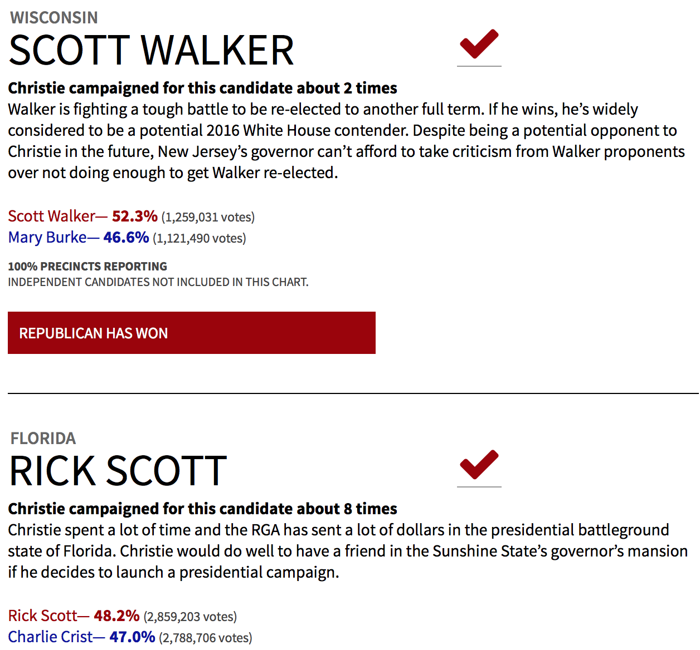
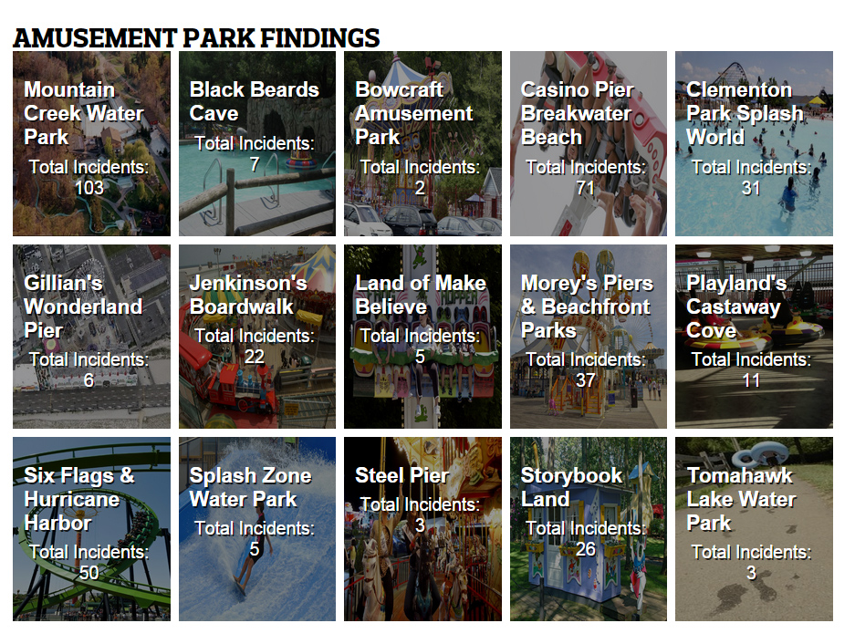

Data chaser and interactive graphics maker. Lots of code, reporting and coffee, all in the name of journalism. You can find my work at International Business Times where I work as deputy data visuals editor. Before that, I was data reporter at NJ.com and The Star-Ledger. An alum of the CUNY Graduate School of Journalism. Before that, I went to the University of Florida. I help with Hack Jersey too.
Also, not a unicorn. Just a regular person. (sorry!)
Follow me on Twitter or email me carla.a.astudillo[at]gmail.com.
Click here for full list of links
Using data from the Tax Policy Center, this calculator can tell you how much money will be added or taken away from your bi-monthly paycheck based on each 2016 candidates' tax plan. There's also a dropdown menu where you can choose from different income level and compare the differences.
Interactive and static graphics using D3.js library. Created interactive charts for a story on Guangdong's shift to manufacturing in China. Created charts with two y-axis on anti-overdose prescription drug and sales.
An interactive timeline map taking you through the history of Oregon and how the occupied lands of the Oregon standoff went from Native American lands to federal territory. Created using Leaflet.
Several D3.js, interactive maps on the 2016 election primaries, along with results and comparisons.
An interactive, filterable, searchable database of people and events that can be reskinned for different types of stories and updated solely by reporters using Google spreadsheets as a back-end. Github here. Examples of the database in action can be found here and here.
We got about 10 years of arrest-related deaths in New Jersey, including police shootings, "excited delirium" deaths and suicides. I created a Ruby on Rails database and an interactive graphic. New Jersey Press Association Winner.
Two stories I did using the Department of Defense's 1033 program data. The latter one from December 2014 has more detailed data. New Jersey Press Association Winner.
A Ruby on Rails blog detailing the lives of people still affected by Superstorm Sandy two years later. New Jersey Press Association Winner.
Did you know that many hospitals don't encrypt their patient data? I didn't either until I did this story using Health and Human Services' hospital breach data.
Chris Christie didn't run for anything in 2014. But as head of the Republican Governor's Association, he did stump for many fellow Republican candidates. Using the AP's live election API, I built an elections result board tracking how Christie's candidates did in the November 2014 election.
Quick map using New Jersey's anti-bullying school scores in the aftermath of the Sayerville High School football scandal.
Database and other interactive graphics on New Jersey amusement park accidents.
International Business Times
Deputy Data Visuals Editor
Oct. 2015 - Present
NJ Advance Media (NJ.com/The Star-Ledger)
Data Journalist
Nov. 2013 - Sept. 2015
Patch.com
Interactive Data (intern)
May 2013 - August 2013
USA Today
Data Investigative (intern)
June 2012 - August 2012
CUNY Graduate School of Journalism
M.A. in Journalism
August 2011 - Dec. 2012
University of Florida
B.S. in Journalism, B.A. in Costume Design for Theater
August 2005 - June 2009
HTML, CSS, Javascript, Python
2013 CUNY Hillman Prize for Social Justice Reporting
New Jersey Press Association 2015 First Amendment - Art Weissman Memorial Award